用一句话，找到对的人
面向集团内部的 AI 人才检索助理：按住说话，AI 解析检索条件、筛选人才、一键 PK 对比。从功能架构、机器人形象到界面视觉，独立完成手机端与 Pad 端全流程设计。
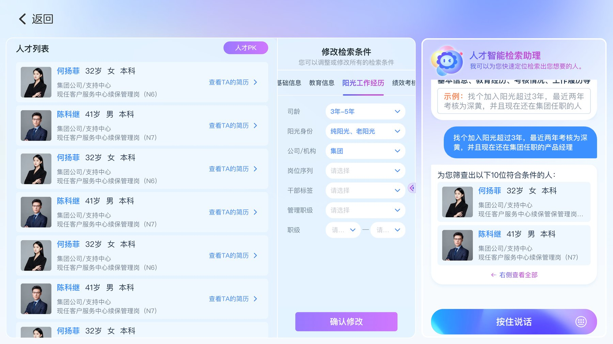
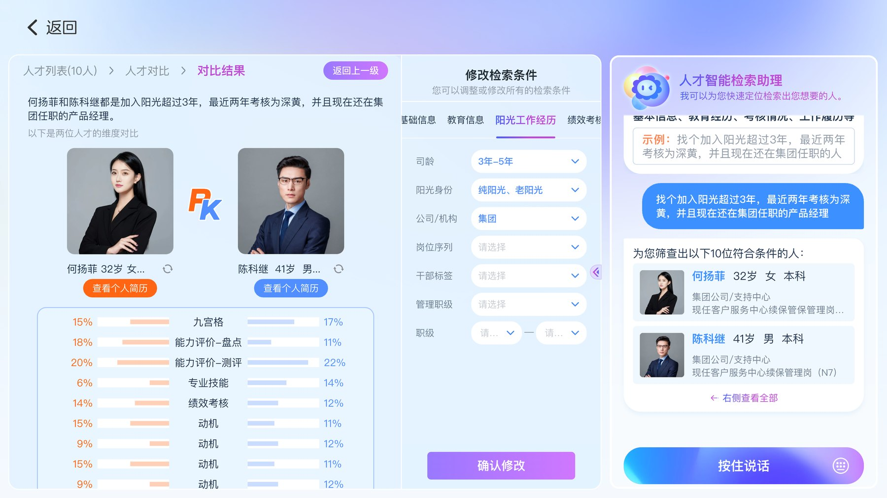
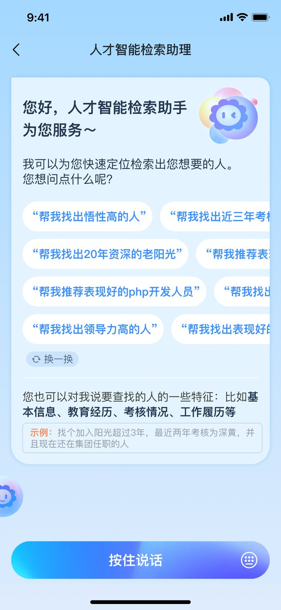
从打招呼到拿到结论，一条完整的对话链路：开口提问 → 条件解析 → 名单筛选 → 人才 PK → 查看人才档案。每一步都把「AI 想清楚了什么」讲给用户听。
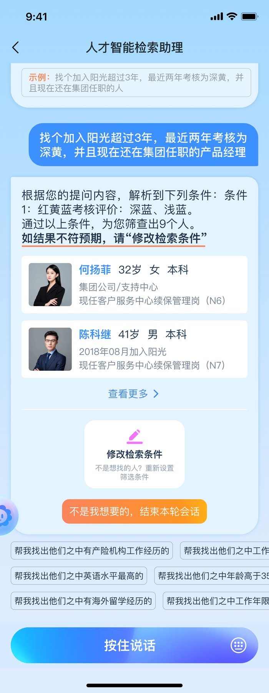
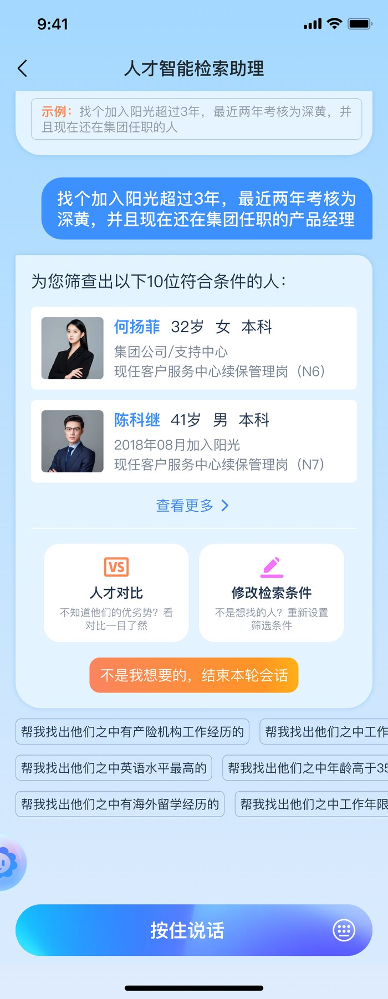
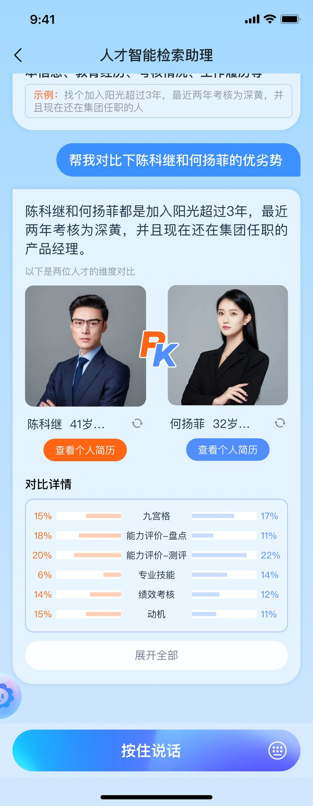
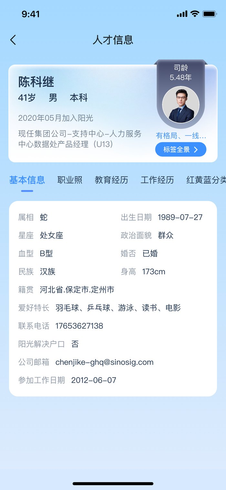
横屏三栏布局：左侧人才列表、中间条件修改、右侧对话助理，支持边聊边改边看。从空状态的引导，到检索成功、人才 PK 与档案详情，覆盖完整使用旅程。
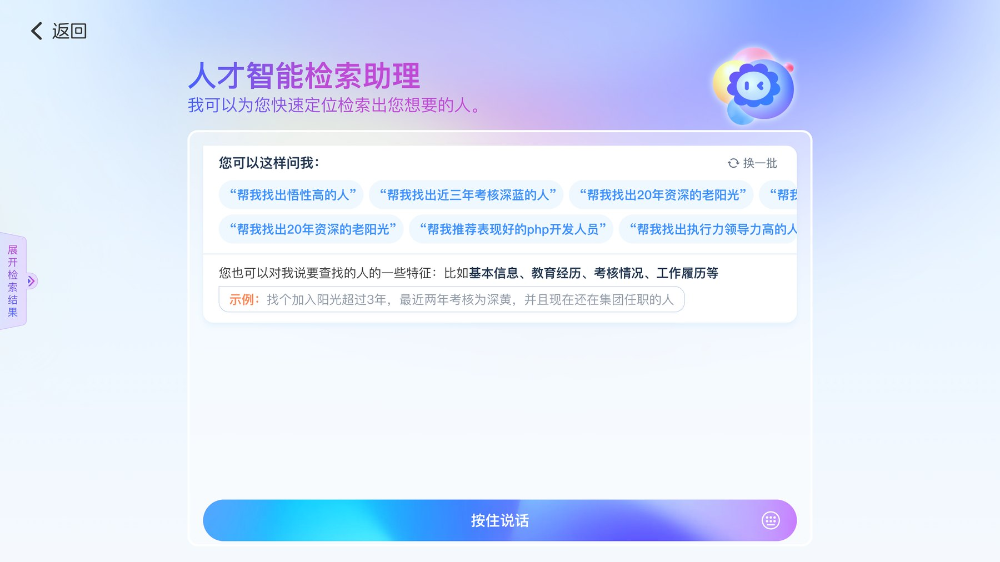
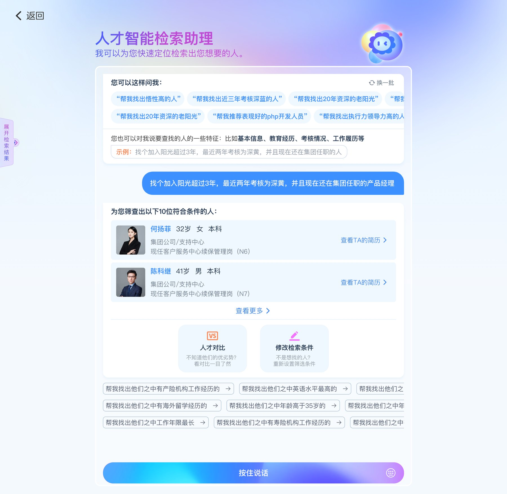
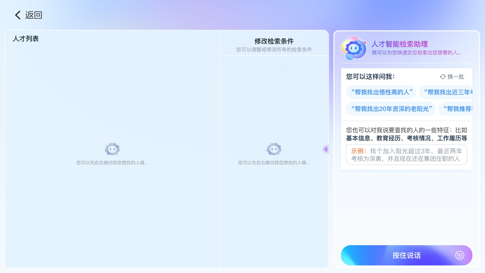
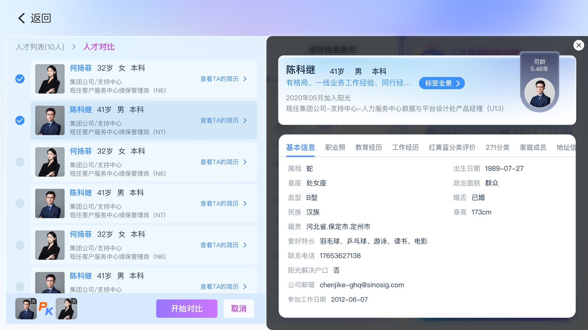
传统的人才系统靠多级表单检索，条件一多就变成「填表大赛」。这个项目把入口换成了对话：用户说一句话，AI 负责把模糊描述拆成结构化条件——考核评价、司龄、机构、职级——再给出可解释的筛选结果。我负责功能需求拆解与逻辑梳理、设计规范制定、机器人形象设计，以及双端全流程页面设计。
「按住说话」是唯一的常驻主操作。示例问题 chips 沉淀高频问法，换一换降低重复感；解析出的条件以文本回显，让 AI 的理解过程可验证、可纠正。
为项目独立设计花朵形 AI 机器人形象，圆眼软轮廓传递「帮忙不抢戏」的气质；在欢迎语、空状态、加载中反复出现，建立情绪连续性。
手机端纵向对话流、Pad 端三栏工作台，组件与状态语义同源同规范；同一轮会话在两端无缝延续，学习成本只有一次。
勾选两位人才即可一键对比；雷达式维度条（九宫格、能力评价、专业技能、绩效考核、动机）以百分比双向呈现，结论看得见依据。
精选项目 · App / Web / 大屏 / AI 助手